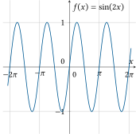
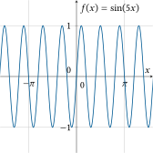
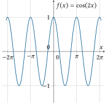
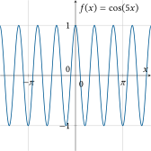
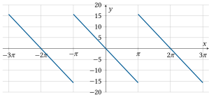

Übungen zum Selbststudium#
Übung 5.1
Welche Periode haben die folgenden Funktionen:
Sinus-Funktion \(f(x) = \sin(x)\)?
Kosinus-Funktion \(f(x) = \cos(x)\)?
Quadratische Funktion \(f(x)=x^2\)?
Tangens-Funktion \(f(x)=\tan(x)\)?
Lösung
Sinus-Funktion \(f(x) = \sin(x)\) Periode \(2\pi\)
Kosinus-Funktion \(f(x) = \cos(x)\) Periode \(2\pi\)
Quadratische Funktion \(f(x)=x^2\) nicht periodisch
Tangens-Funktion \(f(x)=\tan(x)\) Periode \(\pi\)
Übung 5.2
Zeichnen Sie die Funktionen \(f(x) = \sin(kx)\) und \(g(x) = \cos(kx)\) für \(k = 2\) und \(k = 5\). Welche Perioden haben die vier Funktionen?
Lösung
Die Periode von \(\sin(2x)\) und \(\cos(2x)\) ist \(\pi\) und die Periode von \(\sin(5x)\) und \(\cos(5x)\) ist \(\frac{2\pi}{5}\).
{kind=link}

Fig. 8 Sinusfunktion \(\sin(2x)\) mit einer Periode \(T = \pi\)#
{kind=link}

Fig. 9 Sinusfunktion \(\sin(5x)\) mit einer Periode \(T = \frac{2\pi}{5}\)#
{kind=link}

Fig. 10 Kosinusfunktion \(\cos(2x)\) mit einer Periode \(T = \pi\)#
{kind=link}

Fig. 11 Kosinusfunktion \(\cos(5x)\) mit einer Periode \(T = \frac{2\pi}{5}\)#
Übung 5.3
Berechnen Sie die folgenden Integrale.
\(a_0 = \frac{1}{\pi} \int_{-\pi}^{\pi} x^2\; dx\)
\(a_1 = \frac{1}{\pi} \int_{-\pi}^{\pi} x^2 \cos(x)\; dx\)
\(a_2 = \frac{1}{\pi} \int_{-\pi}^{\pi} x^2 \cos(2x)\; dx\)
\(b_1 = \frac{1}{\pi} \int_{-\pi}^{\pi} x^2 \sin(x)\; dx\)
\(b_2 = \frac{1}{\pi} \int_{-\pi}^{\pi} x^2 \sin(2x)\; dx\)
Tipp: meist muss zuerst partielle Integration und später Substitution angewandt werden.
Lösung
Lösungsweg
Fourierkoeffizient \(a_0\):
\(\begin{equation*} a_0 = \frac{1}{\pi}\int_{-\pi}^{\pi} x^2\, dx = \frac{1}{\pi}\left[\frac{1}{3}x^3\right]_{-\pi}^{\pi} = \frac{1}{3\pi}\cdot\left(\pi^3 + \pi^3\right) = \frac{2}{3}\pi^2. \end{equation*}\)
Fourierkoeffizient \(a_1\):
\(\begin{align*} a_1 &= \frac{1}{\pi}\int_{-\pi}^{\pi}x^2\cos(x)\, dx = \\ &= \frac{1}{\pi}\left[x^2\cdot \sin(x)\right]_{-\pi}^{\pi} - \frac{2}{\pi}\int_{-\pi}^{\pi}x\, \sin(x)\, dx = \\ &= \frac{1}{\pi}\left[x^2\cdot\sin(x)\right]_{-\pi}^{\pi} - \frac{2}{\pi}\left([-x\cdot\cos(x)]_{-\pi}^{\pi}-\int_{-\pi}^{\pi}-\cos(x)\, dx \right) = \\ &= \frac{1}{\pi}\left[x^2\cdot\sin(x)\right]_{-\pi}^{\pi} + \frac{2}{\pi}\left[x\cdot\cos(x)\right]_{-\pi}^{\pi}-\frac{2}{\pi}\left[\sin(x)\right]_{-\pi}^{\pi} = \\ &= \left[\frac{1}{\pi}(x^2-2)\cdot\sin(x) + \frac{1}{\pi}\cdot 2x\cos(x)\right]_{-\pi}^{\pi} = \\ &= \left(\frac{1}{\pi}(\pi^2-2)\cdot\sin(\pi) + \frac{1}{\pi}\cdot 2\pi\cos(\pi)\right) - \left(\frac{1}{\pi}(\pi^2-2)\cdot\sin(-\pi)-\frac{1}{\pi}\cdot 2\pi\cos(-\pi)\right) = \\ &= -2-2 = -4 \end{align*}\)
Fourierkoeffizient \(a_2\):
\(\begin{equation*} a_2 = \frac{1}{\pi} \int_{-\pi}^{\pi} x^2\cdot \cos(2x)\, dx = \frac{1}{\pi}\left[x^2\cdot \frac{1}{2}\sin(2x)\right]_{-\pi}^{\pi} - \int_{-\pi}^{\pi}2x\cdot \frac{1}{2}\sin(2x)\, dx \end{equation*}\)
Wir rechnen zuerst die Stammfunktion des letzten Integrals aus:
\(\begin{align*} \int 2x\cdot \frac{1}{2}\sin(2x)\, dx &= \int x\cdot\sin(2x)\, dx = \\ &= \left[x\cdot\frac{1}{2}(-\cos(2x))\right] - \int \frac{1}{2}(-\cos(2x))\, dx = \\ &= -\frac{1}{2}x\cdot\cos(2x) + \frac{1}{2}\int \cos(2x)\, dx = \\ &= -\frac{1}{2}x\cdot\cos(2x) + \frac{1}{4}\sin(2x) + C \end{align*}\)
Eingesetzt in das ursprüngliche Integral erhalten wir
\(\begin{align*} a_2 &= \frac{1}{\pi}\left[x^2\cdot \frac{1}{2}\sin(2x)\right]_{-\pi}^{\pi} + \frac{1}{2}\left[x\cdot\cos(2x)\right]_{-\pi}^{\pi} - \left[ \frac{1}{4}\sin(2x)\right]_{-\pi}^{\pi} = \\ &= \frac{1}{4\pi}\left[(2x^2-1)\sin(2x)+2x\cos(2x)\right]_{-\pi}^{\pi} = \\ &= 1. \end{align*}\)
Fourierkoeffizient \(b_1\):
Zwischenrechnung:
\(\begin{align*} \int x^2\cdot \sin(x)\, dx &= \left[x^2\cdot(-\cos(x))\right] - \int 2x\cdot (-\cos(x))\, dx = \\ &= -x^2\cos(x) + 2x\cdot\sin(x) - 2\int 1\cdot\sin(x)\, dx =\\ &= -x^2\cos(x) + 2x\sin(x) + 2\cos(x) + C = \\ &= 2x\sin(x) + (2-x^2)\cos(x) + C \end{align*}\)
Fourierkoeffizient \(b_2\):
Zwischenrechnung:
\(\begin{align*} \int x^2\cdot \sin(2x)\, dx &= -\frac{1}{2}\left[x^2\cdot\cos(x)\right]+\int x\cdot\cos(2x)\, dx = \\ &= -\frac{1}{2}x^2\cos(2x) + \frac{1}{2}\left[x\cdot\sin(2x)\right] - \frac{1}{2}\int\sin(2x)\, dx = \\ &= -\frac{1}{2}x^2\cos(2x) + \frac{1}{2}x\sin(2x) + \frac{1}{4}\cos(2x) + C \end{align*}\)
Übung 5.4
Gegeben sei die Funktion \(f:[-\pi, \pi) \mapsto \mathbb{R}\) mit
die periodisch fortgesetzt wird. Zeichnen Sie das Schaubild der Funktion. Bestimmen Sie zuerst die Fourierkoeffizienten von \(f\) und dann die Fourierreihe.
Lösung
Fourierkoeffizienten: \(a_0=0\); \(a_k=0\); \(b_k=\frac{10\,{\left(-1\right)}^k}{k}\)
Fourierreihe:
{kind=link}

Fig. 12 Schaubild der Funktion \(f(t)= -5\,t\) mit einer Periode \(T = 2\pi\) periodisch fortgesetzt#
Lösungsweg
Es gilt für die Kreisfrequenz: \(\omega=\frac{2\pi}{T}=\frac{2\pi}{2\pi}=1\). Damit können nun die Fourierkoeffizienten berechnet werden.
Der Koeffizient \(a_0\) wird folgendermaßen berechnet:
Da auf dem Intervall \([-\pi,\pi)\) für die Funktion \(f(t) = -f(-t)\) gilt, ist die Funktion \(f\) ungerade. Damit sind Fourierkoeffizienten \(a_k=0\).
Die Fourierkoeffizienten \(b_k\) sind schwieriger zu berechnen, da wir dafür eine allgemeine Formel abhängig von \(k\) brauchen. Außerdem müssen wir partielle Integration anwenden.
\(\begin{align*} b_k & = \frac{1}{\pi}\left( \int_{t=-\pi }^{t=\pi }\underbrace{\left( -5\,t\right)}_{f}\underbrace{\sin\left(k\,t\right)}_{g'}\, dt \right) \\ &= \frac{1}{\pi}\left( \left[\left( -5\,t\right)\left( -\frac{\cos\left(k\,t\right)}{k}\right)\right]_{-\pi }^{\pi }-\int_{-\pi }^{\pi }\left( -5\right)\left( -\frac{\cos\left(k\,t\right)}{k}\right) \, dt \right) \\ &= \frac{1}{\pi}\left( \frac{10\,\pi \,{\left(-1\right)}^k}{k}-\left( \left[\left( -5\right)\left( -\frac{\sin\left(k\,t\right)}{k^2}\right)\right]_{-\pi }^{\pi } \right) \right) \\ &= \frac{1}{\pi}\left( \frac{10\,\pi \,{\left(-1\right)}^k}{k}-\left( 0 \right) \right) \\ &= \frac{10\,{\left(-1\right)}^k}{k}. \end{align*} \)